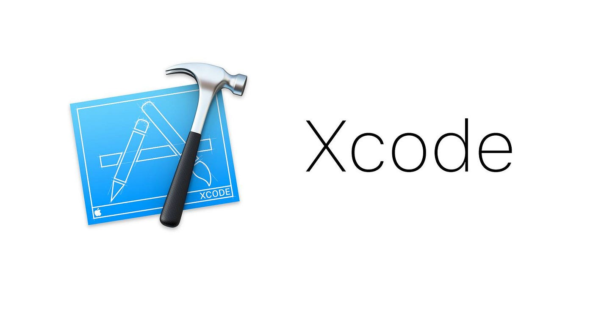

F23 Goals
|
| Goals |
Outcomes |
| Develop my skills in mathematics for professional reporting. |
By the end of my term, I became skilled at finishing the monthly reports with ease. The math wasn't hard, but you had to be really careful because a tiny mistake could mess up everything. |
| Expand my connections within CIBC. |
I formed relationships with my coworkers, and these relationships allowed me to learn a lot about different aspects of software development. Engaging with my colleagues helped me understand various parts of the software development process. |
| Enhance proficiency scripting with Robot Framework |
I became fluent at scripting with the Robot Framework and consistently completed my scripts on time, showcasing efficiency in my work. |
|
Skills Developed
| Soft Skills |
Hard Skills |
| Leadership |
Selenium |
| Analytical Thinking |
Appium |
| Conflict Resolution |
Professional Reporting |
| Networking |
Adobe Analytics |
|
 |
Benefits For Next Job
|
The second half of the term especially focused on my analytical thinking and presenting
skills, on top of the scripting skills developed in the first half. I still executed
Robot Framework UX tests; however, most of my focus was spent on analyzing data and
presenting my findings. I was in charge of monthly reports, which included collecting,
analyzing, and presenting data collected through the various performance tests we ran
the past month. I want to get into machine learning for my next job, and I believe these
skills are highly applicable in the field. Additionally, I was able to really improve my
scripting and coding efficiency, which will really help me at my next job and at school as well.
|
|
Technologies
|

|
For the second half of the term, I mostly worked with Robot Framework, XCode, and Microsoft Office.
I focused on creating and executing UX test scripts within Robot Framework. These scripts captured
the performance of applications on different environments. The Robot Framework was used to automate
the test cases and calculated the response times. Typically, these scripts underwent 20 iterations,
and the average response time was the final result I was looking for.
One of the devices I tested was a MacBook Pro, which required setting up and configuring an XCode project.
Moving on to the monthly reports, I used Microsoft Office to analyze and present the data. Using macros
in Excel, I identified trends and outliers in the data collected over the previous month. Once the data
was organized, I used PowerPoint to visually represent and present the monthly trends observed in the business applications.
|
Reflecting On My Goals
One of the biggest questions I had going into this term was whether this
job was worth delaying my graduation by a year. I believed that if I achieved
the goals I set out at the beginning of the term, it would have been worth it.
Most importantly, I wanted to create new connections and gain valuable work
experience. Reflecting on the past year, I was able to create new connections
with employees from different sectors of the bank, and I've had conversations
about my future in the bank since leaving my work term. Secondly, I was able
to enhance my scripting and Python skills significantly by creating and running
test cases every day. In a fast-paced working environment, I improved my soft
skills, such as time management, multitasking, and presenting, just to name a
few.I would highly recommend this job to any software engineer seeking to
acquire valuable skills and enhance their existing knowledge of performance testing.
Job Description

|
Performance test analysts at CIBC are responsible for gathering requirements, building,
scripting, and running test cases, running baseline tests with various loads, and analyzing
the results through comparison reports. All of these tests and reports serve the same purpose:
to ensure that the performance of these applications meets the standard set by the business,
which is usually a 3-second response time. For the monthly report, I had to ensure that the
delta between months was less than 0.5 seconds. From the second half of this term, the monthly
reports became my main focus, teaching me the importance of the values we calculate on the
business side of the bank. There were strict deadlines that really helped develop my skills
in working under pressure and communicating with different teams about discrepancies with
the values collected.
|
Summary
In summary, my previous year at CIBC provided me with an excellent experience
and learning opportunity. I am confident that I made the right choice to delay
my graduation for the work term. From developing my hard skills to networking,
CIBC enabled me to achieve all the goals I set out to accomplish. I anticipate
being able to apply these skills in my future career.